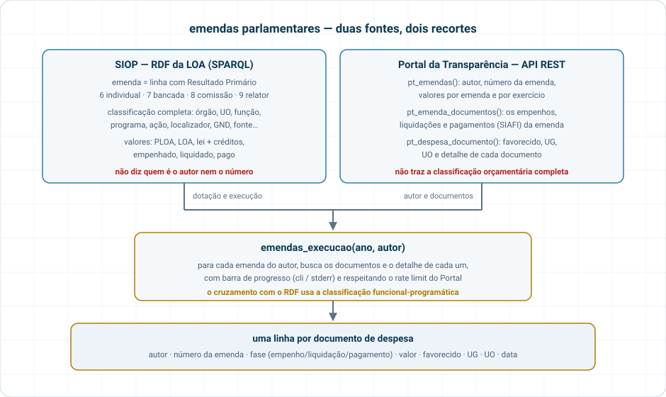

Orçamento Federal e emendas parlamentares em tibbles, a partir de fontes públicas (sem credencial do SIOP):
- SIOP Dados Abertos (SOF/MPO) — endpoint SPARQL do RDF da LOA (2001–2026, com execução) e CSVs oficiais (cadastro de ações, créditos, acompanhamento físico, regionalização).
- Portal da Transparência (CGU) — API REST de emendas (autor, número, valores) e documentos de despesa (empenhos, pagamentos, favorecidos). Chave gratuita: https://portaldatransparencia.gov.br/api-de-dados/cadastrar-email.
Pacote irmão em Python: siopy. Documentação: https://strategicprojects.github.io/siop/.
Instalação
# quando publicado no CRAN
install.packages("siopr")
# versão de desenvolvimento
# install.packages("pak")
pak::pak("StrategicProjects/siop/siopr")Uso
library(siopr)
# Emendas na LOA 2025 (RP 6 = individuais, 7 = bancada, 8 = comissão, 9 = relator)
em <- siop_emendas(2025, tipo = c("individual", "bancada"))
dplyr::summarise(em, dplyr::across(c(loa, empenhado, pago), sum), .by = tipo_emenda)
# Só o Ministério da Saúde, função 10
siop_emendas(2025, tipo = "individual", orgao = "36000", funcao = "10")
# Orçamento inteiro de um órgão (qualquer RP)
siop_orcamento(2025, orgao = "26000")
# Última carga do RDF
siop_ultima_atualizacao()
# SPARQL cru
siop_sparql("SELECT ?exercicio ?d WHERE { GRAPH ?g { ?e a loa:Exercicio ;
loa:identificador ?exercicio ; loa:dataUltimaAtualizacao ?d } }")
# CSVs oficiais (cache em disco; refresh = TRUE para rebaixar)
siop_cadastro_acoes(2025, "localizadores")
siop_creditos(2025)
siop_catalogo()
# Portal da Transparência — Sys.setenv(PORTAL_TRANSPARENCIA_API_KEY = "...")
pt <- pt_emendas(2025, autor = "NOME DO PARLAMENTAR")
docs <- pt_emenda_documentos(pt$codigo_emenda[[1]])
det <- pt_despesa_documento(docs$codigo_documento[[1]])
# Tudo junto: uma linha por documento, com favorecido/UG/UO
emendas_execucao(2025, autor = "NOME DO PARLAMENTAR")Colunas em snake_case, códigos como texto (zeros à esquerda preservados), valores em R$ numéricos. O RDF do SIOP não traz autor nem número de emenda — isso vem do Portal da Transparência:

Atualização das fontes
| Fonte | Periodicidade | Como verificar |
|---|---|---|
| RDF/SPARQL SIOP | recarga a cada poucos dias (exercício corrente); anteriores reprocessados periodicamente | siop_ultima_atualizacao() |
| CSVs SIOP | publicações pontuais (data no nome do arquivo) | siop_catalogo() |
| PT – Tesouro Gerencial (emendas, despesas) | diária | página Origem dos Dados |
| PT – Apoios/Solicitações (SLCN) | semanal | idem |
Testes
devtools::test() # offline, com fixtures
Sys.setenv(SIOPR_LIVE = "true"); devtools::test() # inclui chamadas reais